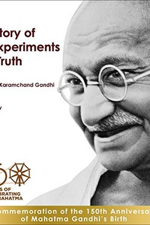

Library › Psychology & People
My Experiments with Truth — Summary & Key Lessons

Gandhi's autobiography — not of a saint, but of a man testing truth in diet, family, politics and power.
📖 OPEN THE FULL INTERACTIVE BREAKDOWN →🌐 Read it in Hindi, Hinglish, Gujarati, Tamil & 22 more languages — free, with audio.
💡 The Big Idea
Gandhi called this book 'an autobiography of my experiments with truth' — nothing less, because he genuinely treated life as a laboratory: diet experiments, celibacy experiments, simplicity experiments, non-violence experiments. Its radical power is the refusal to separate the personal from the political — he reformed his own kitchen, his household and his pride before he reformed a nation. The book is not a saint's story; it is a scientist's diary of self-transformation, full of admitted failures, which is exactly why it still teaches.
🧠 The 6 Key Lessons
Lesson 1: Truth Is a Laboratory Practice
Part 1: The Experiments
Gandhi's method was startlingly modern: state a hypothesis, act, observe, record, revise. His experiments were moral (ownership of possessions, eating to live vs living to eat, promises kept) and his failures are written in as honestly as his successes. The lesson: integrity is not a fixed state but an ongoing experiment — and self-observation is its first instrument.
📖 Example: He gave up milk after watching the way it was obtained — an experiment in compassion that changed his health and his household. Read the full example →
⚡ Do this: Treat one of your principles as a hypothesis this month: state it, test it in a real situation, record what happened.
Lesson 2: The Small Is the Political
Part 2: Self-Rule
Swaraj (self-rule) for Gandhi began at home: he cleaned his own toilets, spun his own cloth, and put his own family under the same rules as the nation. The profound teaching: you cannot demand of the world what you do not practise yourself. Personal reform is the precondition — not the decoration — of social change.
📖 Example: A leader who preaches austerity and lives lavishly has, in Gandhi's frame, already lost the argument. Read the full example →
⚡ Do this: Pick one domain where you hold a public standard — and bring your own behaviour up to it this month.
Lesson 3: Fear and Its Antidotes
Part 3: Courage
Gandhi repeatedly faced violence, imprisonment and personal risk — and defined his method as the conquest of fear, not its absence. He was explicit: fearlessness is the first requirement of spirituality, and the practice is to act rightly while afraid. His non-violence was not passivity; it was the disciplined refusal to be governed by fear or by retaliation.
📖 Example: In South Africa, facing mobs and prison, he wrote that the Truth force (satyagraha) works only when the fear of consequence has been surrendered. Read the full example →
⚡ Do this: Identify one action you avoid out of fear of consequence — and take one small step toward it today.
Lesson 4: Simplicity as Discipline
Part 4: The Plain Life
Gandhi's famous austerity was not performance — it was a system for preserving energy for what mattered. Each complexity he shed (foreign clothes, servants, spices, milk) returned time and attention to his work. The teaching is economic as much as moral: luxuries tax you in attention, and attention is the scarcest resource.
📖 Example: The fewer choices a monk makes about food, dress and schedule, the more capacity remains for the real work — the same reason modern focus warriors minimise decisions. Read the full example →
⚡ Do this: Remove one unnecessary complexity from your week (a subscription, a commitment, a thing) and spend the reclaimed hour on your core work.
Lesson 5: The Means Are the Ends
Part 5: The Method
Gandhi's most radical teaching: means and ends are inseparable — the path becomes the destination. His insistence on truthful means was not idealism; it was strategy, because methods determine the kind of world you build while building it. A nation won by lies is run by liars; a career built on shortcuts is lived in short cuts.
📖 Example: The Indian independence he won through non-violence produced a movement culture — whereas violent revolutions often reproduce their violence in the state. Read the full example →
⚡ Do this: For one goal, audit your methods: would the world you are building with these means be the world you actually want?
Lesson 6: The Family as Laboratory
Part 4: The Home Experiments
Gandhi's most honest pages are about his own household: experiments with diet, with his children's education, with his temper and with Kasturba's consent — many of which, he admits, did not succeed. Ahimsa begins where power is closest, and the failures closest to home are the humblest teachers of all.
📖 Example: Gandhi wrote frankly that he could not win his sons fully to his ideals — the most personal experiments fail first and teach most. Read the full example →
⚡ Do this: Run one experiment in your own family this month: apply your public principle at home, and record honestly what happens.
✅ 5-Step Action Plan
- Turn one principle into a tested hypothesis this month.
- Bring one personal behaviour up to your own public standard.
- Take one small step today against a fear of consequence.
- Remove one complexity and reclaim one hour for core work.
- Audit your means to one goal — and align them with the end you want.
⚠️ When This Doesn't Work
Gandhi's own life had criticisms he addresses incompletely — his experiments often failed, his views on caste and sexuality evolved slowly, and his austerity sometimes burdened his family. Read it as an honest diary of a fallible man, not as a flawless saint's manual.
💀 The Graveyard Proves It
📷 Ramalinga Raju — Riding a Tiger, Not Knowing How to Get Off. Burn: ₹7,000 crore fake cash Read the full case study →
💬 Best Quotes from My Experiments with Truth
- “I claim to be a simple individual liable to err like any other fellow mortal.”
- “The difference between what we do and what we are capable of doing would suffice to solve most of the world's problems.”
- “In the attitude of silence the soul finds the path in a clearer light.”
Interactive version: mark lessons as read, listen in your language, share quote cards.